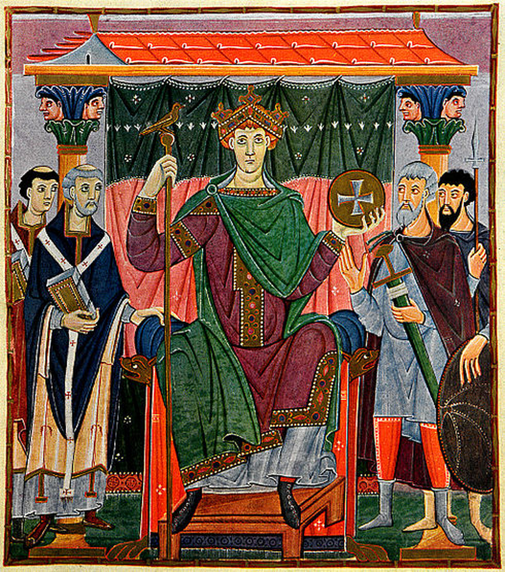
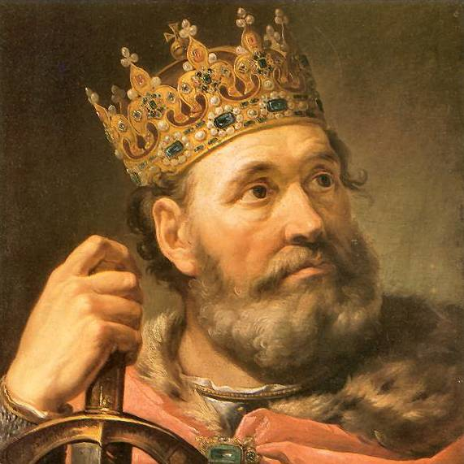
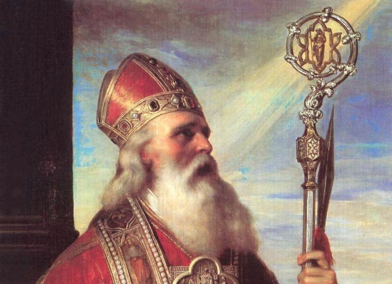

Cesarz Otton III
Poznaj niemieckiego władcę,
który w 1000 roku przybył do Polski z pielgrzymką do grobu św.
Wojciecha.
|

Cesarz Otton III
Poznaj niemieckiego władcę, |

Bolesław ChrobryPoznaj historię władcy, którego przydomek "Chrobry" oznacza człowieka mężnego, dzielnego i odważnego. Dowiedz się więcej |

Biskup WojciechPatron Polski, Czech i Węgier - to chyba najlepiej odzwierciedla jego wkład w historię Polski i Kościoła katolickiego. Dowiedz się więcej |
Kliknij, aby dowiedzieć się więcej o danym regionie.